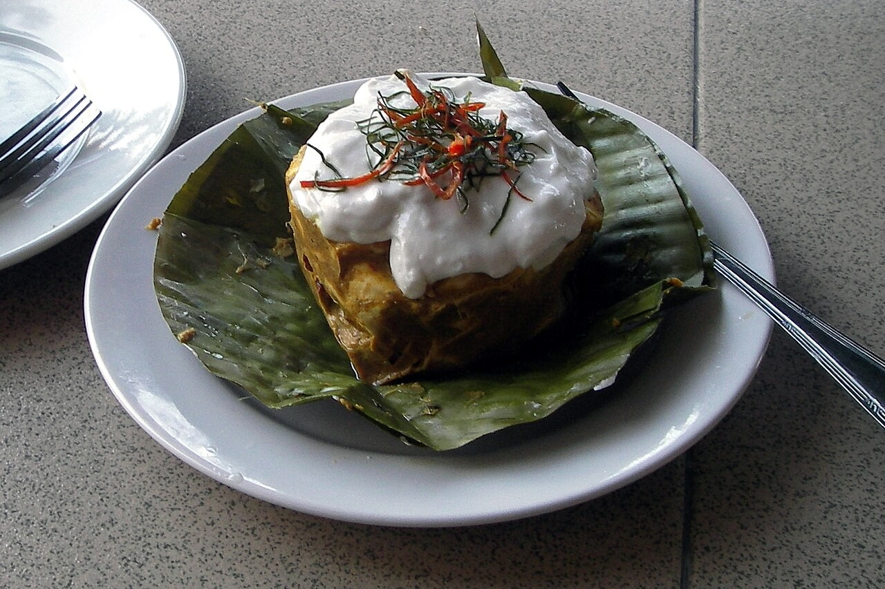
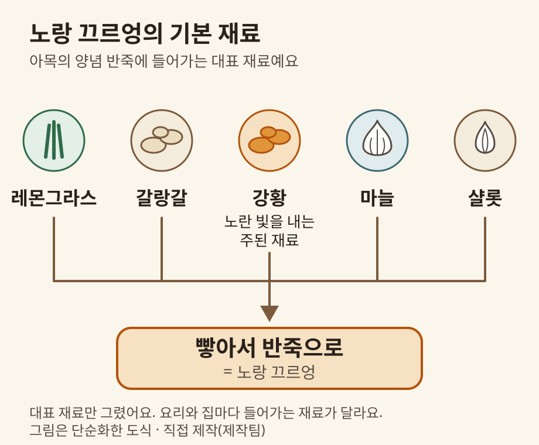

Day 2바나나잎 그릇 속 노란 찜 한 그릇 — 아목과 프라혹으로 맛보는 캄보디아
오늘의 질문: 바나나잎 그릇에 담긴 노란 찜 아목과 발효 생선 프라혹은 무엇으로 만들고, 캄보디아 밥상에서 어떤 맛을 낼까요?읽는 시간 약 9분·음식
- 아목은 끄르엉(향신료 반죽)으로 양념한 생선을 코코넛과 함께 바나나잎 그릇에 담아 찌는 요리로, 캄보디아를 대표하는 음식 가운데 하나로 흔히 소개돼요 추정.
- 프라혹은 주로 리엘이라는 작은 민물고기를 소금에 절여 삭힌 생선 페이스트로, 많은 요리의 바탕 맛을 낸다고 해요 추정.
- 맛있게 먹었다면 "ឆ្ងាញ់(츠응냐, 맛있어요)" 한마디로 마음을 전해 봐요.
표시가 없는 숫자는 확인된 값이에요. 자료마다 다르거나 어림한 값에만 추정·논쟁 있음을 붙였어요.
어제 퀴즈 정답 1번 O · 2번 ③ · 3번은 단톡방에서 이야기해요
카드로 보기
카드를 누르면 크게 볼 수 있어요.


바나나잎 그릇이 식탁에 놓이면
프놈펜의 한 식당에 앉아 메뉴판에서 "아목"을 골랐다고 상상해 봐요. 한참을 기다리자 바나나잎을 접어 만든 작은 그릇이 식탁에 놓여요. 그 안에는 노란 빛이 도는 부드러운 찜이 담겨 있어요. 숟가락을 대기 전에, 이 한 그릇이 무엇으로 만들어졌는지부터 알아볼까요?
아목(អាម៉ុក, amok)은 끄르엉(향신료 반죽)으로 양념한 생선을 코코넛과 함께 바나나잎 그릇에 담아 찌는 요리예요. 코코넛 껍질을 그릇으로 쓰는 곳도 있어요. 생선은 민물고기를 주로 쓴다고 해요 추정. 생선 대신 닭고기·돼지고기·소고기·두부로 만든 아목도 있어요.

사진 속 아목은 접시에 바나나잎을 깔고 그 위에 올린 모습이에요. 잎을 접어 그릇을 만들어 찌기도 하고, 이렇게 잎을 깔아 내기도 하는 거예요. 위에 얹힌 하얀 것은 코코넛 크림이에요.
찌는 데는 보통 20~30분쯤 걸리고, 식당에서는 30분 넘게 기다릴 수도 있다고 해요. 그렇게 익은 아목은 무스나 수플레처럼 몽글몽글 부드러워요. 기다린 만큼 숟가락이 사르르 들어가는 한 그릇이에요.
아목은 캄보디아를 대표하는 음식 가운데 하나로 흔히 소개돼요 추정. 한국어 여행 글에는 조리가 복잡해서 명절이나 행사 때 대접하는 음식으로 소개되기도 해요 추정. 오래전 왕실 요리에서 비롯됐다고 전해지지만, 어디서 시작됐는지는 자료마다 달라요 논쟁 있음. 이웃 나라에도 바나나잎에 싸서 찌는 비슷한 요리가 있어서, 나라마다 자기 방식으로 즐겨요.
노란 빛의 비밀, 끄르엉
아목의 맛과 빛깔은 끄르엉(គ្រឿង, kroeung)에서 와요. 끄르엉은 레몬그라스(레몬 향이 나는 풀), 갈랑갈(생강과 비슷하게 생긴 뿌리줄기), 강황(노란 빛을 내는 뿌리줄기), 마늘, 샬롯(작은 양파의 한 종류) 같은 허브와 뿌리를 빻아 만든 향신료 반죽이에요. 카피르 라임(향이 진한 라임의 한 종류)의 껍질과 잎을 더하기도 해요. 요리마다, 집마다 조금씩 달라요.

끄르엉은 색에 따라 노랑·초록·빨강으로 나누고, 아목에는 노랑이나 초록을 쓴다고 소개돼요 추정. 노랑은 강황이 주된 색을 내고, 빨강에는 말린 붉은 고추가 들어간다고 해요 추정. 오늘 제목의 "노란 찜"은 노랑 끄르엉, 곧 강황이 내는 빛깔을 가리켜요.
우리 음식에 양념장이 있듯 캄보디아 요리에는 끄르엉이 있다고 생각하면 쉬워요. 다만 끄르엉은 간장 같은 액체 양념이 아니라, 허브와 뿌리를 빻아 만든 반죽이라는 점이 달라요.
항아리에서 삭힌 맛, 프라혹
오늘 제목의 두 번째 주인공은 프라혹(ប្រហុក, prahok, 쁘라혹이라고도 적어요)이에요. 프라혹은 주로 리엘이라는 작은 민물고기를 소금에 절여 말리고 찧은 뒤, 항아리에서 삭힌 생선 페이스트예요. 다른 물고기로 만드는 방식도 있어요. 이웃 나라에도 비슷한 발효 생선 소스가 있지만, 오늘은 캄보디아의 프라혹을 만나 봐요.
항아리에 담아 한 달쯤 삭힌다고 해요 추정. 삭히는 동안 우러난 국물은 따로 떠내 생선 소스로 쓴대요. 프라혹은 향이 진해서 처음 맡는 사람은 놀랄 수 있어요. 영어권 자료에서는 "캄보디아 치즈"라는 별명으로도 불러요.
우리에게 익숙한 것에 빗대면 젓갈과 닮았어요. 젓갈의 하나인 새우젓도 새우를 소금에 절여 삭힌 음식이니까요. 다만 프라혹은 민물고기를 으깬 페이스트이고, 그 자체로 딥이 되거나 여러 요리의 바탕 맛을 낸다는 점이 달라요 추정. 어느 쪽이 더 낫다는 이야기가 아니라, 생선을 저장하고 맛을 내는 서로 다른 지혜예요.
그런데 외국인 손님용 메뉴에서는 프라혹을 줄이거나 빼는 곳이 많다고 해요. 그러니 프라혹을 줄여 낸 음식은 캄보디아 사람들이 즐기는 원래 맛과 조금 다를 수 있어요. 원래 맛이 궁금하다면 현지 동료에게 물어보세요.
프라혹은 언제 만들까요? 건기에 호수와 강의 물이 빠지면 물고기가 모여들고, 이때 프라혹을 많이 만든다고 해요 추정. 최근 몇 해 동안 프라혹 철의 시작은 12월이나 1월 초에 보도됐어요 추정. 이 물고기들이 어디서 오는지는 Day 8에서 만나요.
밥상 위에서 만나는 맛
그럼 아목과 프라혹은 밥상에서 어떻게 만날까요? 캄보디아 밥상의 중심은 밥이고, 대부분의 끼니에 밥이 올라요. 한 끼에는 보통 서너 가지 이상의 요리가 오르는데, 예를 들면 신 국, 짭짤한 생선, 쓴맛 나는 채소, 그리고 밥이에요.
캄보디아 밥상도 밥을 중심으로 국과 곁들이가 함께 올라요. 우리 밥·국·반찬 상차림과 닮았지만, 한 끼를 소개하는 자료에는 신 국과 쓴맛 나는 채소가 자주 함께 꼽혀요. 닮은 짜임 안에 담긴 맛은 나라마다 달라서, 직접 맛보며 알아 가면 돼요.
프라혹도 이 상에 올라요. 프라혹에 다진 돼지고기·코코넛 밀크·노란 끄르엉을 넣어 걸쭉하게 끓인 딥, 프라혹 크티스(prahok ktis)를 채소와 곁들여 먹기도 해요. 한 레시피 글은 이 딥의 진한 풍미를 프라혹이 낸다고 소개해요 추정. 오늘 만난 끄르엉과 프라혹이 한 그릇에서 만나는 셈이에요.
맛의 조합은 어떨까요? 한 안내서는 한 끼에 단맛·신맛·짠맛·쓴맛 소스가 두루 오른다고 하고, 다른 안내서는 신맛·쓴맛·알싸한 맛을 즐긴다고 해요 추정. 무엇이 중심인지는 자료마다 달라요. 그러니 현지에서 "이 음식은 어떤 맛이 중요해요?" 하고 물어보면 좋은 대화가 시작될 거예요.
오늘은 바나나잎 그릇 하나에서 시작해 끄르엉과 프라혹을 거쳐 밥상까지 따라왔어요. 캄보디아 밥상에서는 허브와 뿌리를 빻은 반죽, 항아리에서 삭힌 생선, 그리고 밥을 함께 만날 수 있어요. 현지에서 노란 찜 한 그릇을 만나면 오늘 이야기를 떠올려 보세요.
| 항목 | 내용 | 확신도 | 출처 |
|---|---|---|---|
| 아목(អាម៉ុក) | 끄르엉으로 양념한 생선을 코코넛과 함께 바나나잎 그릇(또는 코코넛 껍질)에 담아 찌는 요리. 닭·돼지·소고기·두부로도 만듦 | 확실 | Wikipedia Fish amok, Wikivoyage, 중도일보 |
| 아목 찌는 시간 | 보통 20~30분, 식당에서는 30분 이상 걸릴 수 있음. 무스·수플레 같은 질감 | 확실 | Wikipedia Fish amok, Wikivoyage |
| 아목의 위상 | 대표하는 음식 가운데 하나로 흔히 소개됨(공식 지정 근거는 찾지 못함) | 추정 | Wikipedia Fish amok, 중도일보, 한국어 위키백과 |
| 아목의 기원 | 왕실 요리에서 비롯됐다고 전해지나 기원은 자료마다 다름 | 논쟁 있음 | Wikipedia Fish amok |
| 끄르엉(គ្រឿង) | 레몬그라스·갈랑갈·강황·마늘·샬롯 같은 허브와 뿌리를 빻은 향신료 반죽 | 확실 | Wikipedia Kroeung |
| 프라혹(ប្រហុក) | 주로 리엘이라는 작은 민물고기로 만든 발효 생선 페이스트 | 확실 | 국제뉴스, The Star, Cultural Survival |
| 프라혹 삭히는 기간 | 한 달쯤 | 추정 | Wikipedia Prahok |
| 외국인 손님용 메뉴 | 프라혹을 줄이거나 빼는 곳이 많음 | 확실 | Wikipedia Prahok, Wikivoyage |
| 프라혹 철 | 건기에 물이 빠질 때. 최근 몇 해 철의 시작은 12월이나 1월 초에 보도됨 | 추정 | The Star(2021·2025) |
| 한 끼 밥상 | 밥이 중심, 서너 가지 이상(신 국·짭짤한 생선·쓴 채소·밥) | 확실 | Cultural Survival, Wikivoyage |
프놈펜에서 만나면
- 오늘 바로: "츠응냐" 소리 내어 세 번 말해 보기. 아래 크메르어 한마디를 세 번 소리 내어 말해 보세요. 식사를 마치고 이 한마디를 건네면 음식 이야기로 대화가 이어질 수 있어요.
- 아목은 일찍 주문하기. 찌는 데 시간이 걸려서 식당에서는 30분 넘게 기다릴 수 있다고 해요. 일정이 빠듯한 날에는 자리에 앉자마자 먼저 주문하고, 기다리는 동안 다른 요리와 밥을 나눠 먹어도 좋아요.
- 못 먹는 음식은 처음에 말하기. 아목에는 보통 생선과 코코넛이, 프라혹에는 생선이 들어가고, 채소 요리에도 피시소스나 새우가 쓰이는 일이 많다고 해요 추정. 알레르기나 채식 같은 사정은 주문 전에 현지 동료에게 부탁해 전하고, 알레르기가 있다면 조금만 맛보는 것도 피하세요. 우리 제작팀의 권고예요(물과 위생은 Day 53에서 다뤄요).
오늘의 크메르어 한마디
ឆ្ងាញ់
chhnganh
츠응냐
맛있어요. 음식을 먹고 맛이 좋을 때 하는 말이에요. 끝소리는 'ㄴ'처럼 살짝 닫는 느낌으로 내요.
철자와 한글 발음은 추정이에요. 한글은 근사 발음이고, 사전에서는 chngañ으로 적기도 해요.
오늘의 퀴즈
- OX아목은 바나나잎을 접어 만든 그릇에 담아 쪄서 만드는 요리예요. (O / X)
- 객관식프라혹은 주로 무엇으로 만들까요?
- ① 콩을 삶아 띄운 것
- ② 리엘 같은 작은 민물고기를 소금에 절여 삭힌 것
- ③ 바다 새우를 햇볕에 말린 것
- ④ 코코넛 과육을 발효한 것
- 생각해 볼 질문정답은 없어요. 현지 동료와 처음 보는 음식을 함께 먹게 된다면, 그 음식에 대해 무엇을 물어보고 싶나요?
정답은 이 쪽 맨 끝에 있어요
더 알아보기
- 내일(Day 3): 「인도에서 온 브라만과 뱀 공주의 결혼 — 첫 왕국 푸난과 진랍」. 캄보디아 사람들이 기억하는 나라의 시작 이야기를 따라가 봐요.
- Day 8 예고: 프라혹이 되는 물고기들은 어디서 올까요? 그 물길을 따라가 봐요.
- 한국어로 더 읽고 싶다면: 중도일보, 캄보디아 대표 음식 아목(홍성군다문화) (KO)
- 끄르엉이 더 궁금하다면: Wikipedia, Kroeung (EN)
확신도 표시 범례
- 확실 공신력 있는 출처 둘 이상이 일치하거나, 헌법·공식 통계 같은 1차 자료로 확인한 내용. 본문에서는 따로 표시하지 않고 표 1에 적었어요.
- 추정 믿을 만하지만 2차 자료나 추계에 기대고 있어, 자료나 시점에 따라 달라질 수 있는 내용
- 논쟁 있음 출처끼리 수치나 해석이 갈려 범위로 쓰거나 여러 견해를 함께 소개한 내용
퀴즈 정답
눌러서 정답 보기
1번 O. 아목은 끄르엉으로 양념한 생선을 코코넛과 함께 바나나잎 그릇에 담아 쪄요. 코코넛 껍질을 그릇으로 쓰거나, 사진처럼 접시에 잎을 깔아 내기도 해요. 「바나나잎 그릇이 식탁에 놓이면」 대목에 나와요.
2번 ②. 프라혹은 주로 리엘이라는 작은 민물고기를 소금에 절여 삭힌 생선 페이스트예요. 젓갈과 닮아서 ③과 헷갈렸다면 자연스러운 일이에요. 「항아리에서 삭힌 맛, 프라혹」 대목에 나와요.
3번 정답 없음. 「밥상 위에서 만나는 맛」 대목에서 "이 음식은 어떤 맛이 중요해요?" 하고 물어보자고 했던 것처럼, 질문 하나가 대화의 문을 열어요. 짧게 한 줄로 답해도 좋아요. 단톡방에서 이야기해 봐요.